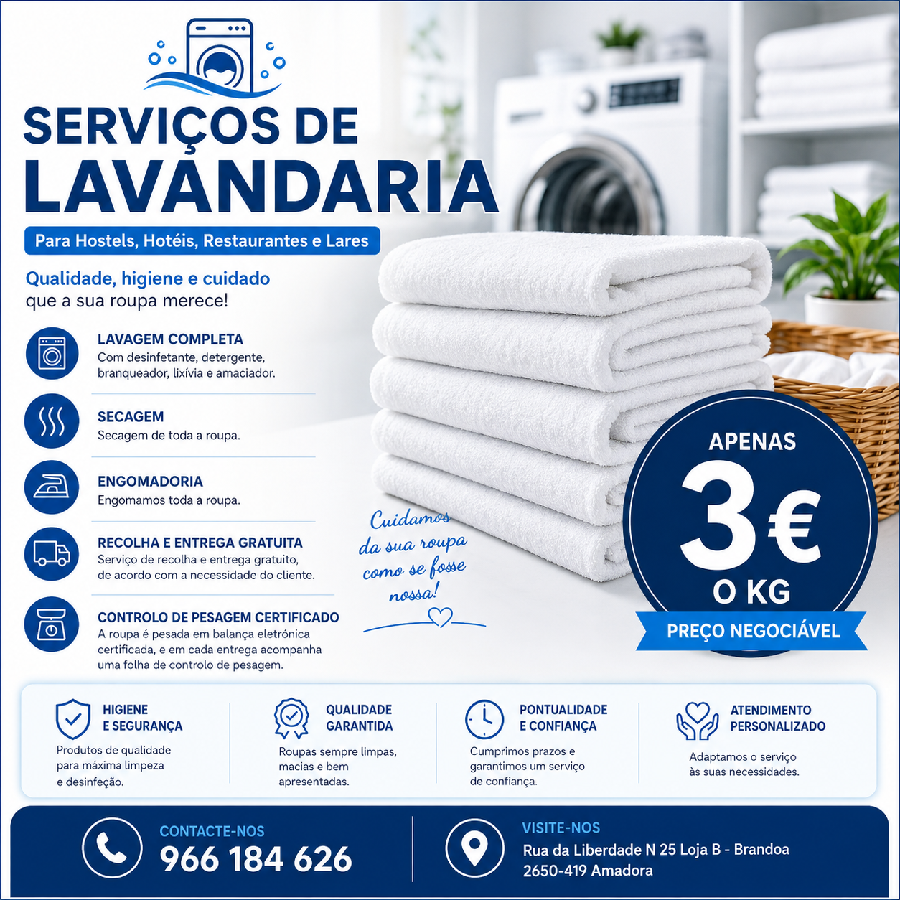
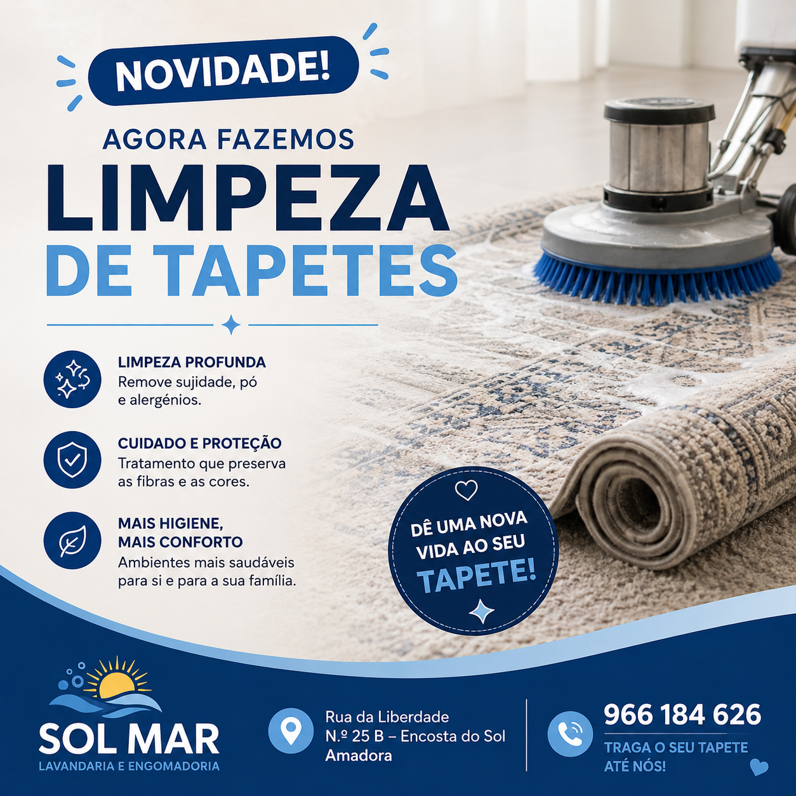

🧺
Lavandaria
Lavagem à peça ou ao quilo, secagem e preparação da roupa.
A Sol Mar é uma lavandaria e engomadoria situada na Brandoa, com soluções completas para particulares, famílias e empresas.
Na Sol Mar Lavandaria e Engomadoria encontra uma grande variedade de serviços pensados para si: lavandaria, engomadoria, lavagem e secagem, limpeza a seco, limpeza de tapetes, limpeza de edredões e arranjos de costura.
Também disponibilizamos recolha e entrega de roupa ao domicílio nas zonas abrangidas pela nossa rota. Diga-nos o que precisa e tratamos do resto.
Lavagem à peça ou ao quilo, secagem e preparação da roupa.
Serviço à peça e pacotes mensais para uso regular.
Tratamento para peças delicadas e tecidos que exigem cuidados específicos.
Pequenos arranjos e ajustes para prolongar a vida das suas peças.
Limpeza profunda e cuidada para melhorar a higiene e apresentação.
Limpeza e tratamento de edredões e roupa de cama.
Recolhemos a roupa na sua morada e devolvemo-la tratada, de acordo com o serviço contratado.
A disponibilidade está sujeita à morada, quantidade de roupa e organização da rota. Confirme connosco se a sua rua está abrangida.
Confirmar a minha zonaEscolha entre o serviço individual, ideal para necessidades pontuais, ou os nossos pacotes mensais com duração de 4 semanas.
Serviço completo para peças específicas ou para quem prefere contratar um pacote de lavagem, secagem e engomadoria.
Serviço profissional para empresas com necessidades recorrentes e volumes maiores, incluindo lavagem, secagem, engomadoria, controlo de pesagem e recolha e entrega conforme necessidade.


Limpeza profunda e cuidada, com valor final de acordo com as medidas, material e estado do tapete.
Envie-nos uma fotografia e as medidas pelo WhatsApp para receber um orçamento.
Pedir orçamentoTemos serviços de limpeza a seco para diferentes tipos de tecidos e peças que não devem ser submetidas a uma lavagem convencional.
Envie-nos uma fotografia pelo WhatsApp e diga-nos o que pretende.
Consultar preçoRua da Liberdade Nº 25 Loja B
Encosta do Sol – Brandoa
2650-419 Amadora
Estamos na Rua da Liberdade Nº 25 Loja B, Encosta do Sol – Brandoa, 2650-419 Amadora.
Abrir no Google Maps